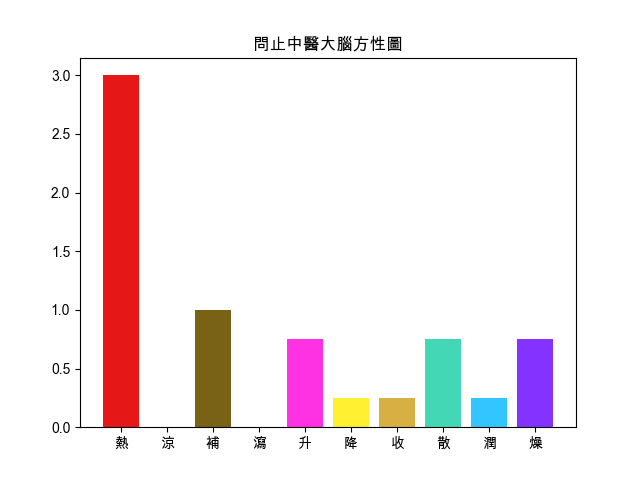

回上頁
【大建中湯】
出處
金匱要略
功用
溫中補虛，降逆止痛。
應用
脾胃虛寒，心胸中大寒痛，嘔不能食，腹中寒，上衝皮起，出見有頭足，上下痛而不可觸近。
組成
● 花椒 : 溫中止痛，殺蟲止癢
● 乾薑 : 溫中散寒，回陽通脈，溫肺化飲
● 人參 : 大補元氣，補脾益肺，生津止渴，安神益智
腹痛
腹脹
尿道結石
全身倦怠
【組成方劑的單味藥藥性表】
-
溫熱藥
平藥
寒涼藥
補藥
花椒☀ ,乾薑☀ ,人參☂
平藥
瀉藥
-
升性藥
平藥
降性藥
散性藥
乾薑☀
花椒☀
平藥
收性藥
人參☂
